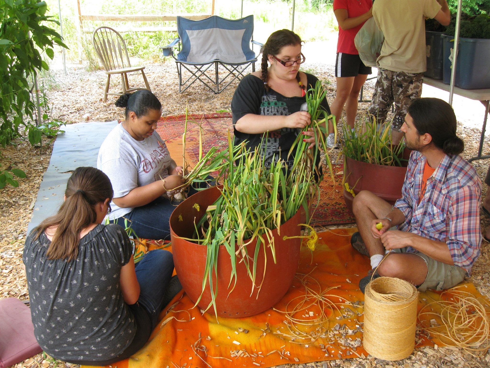
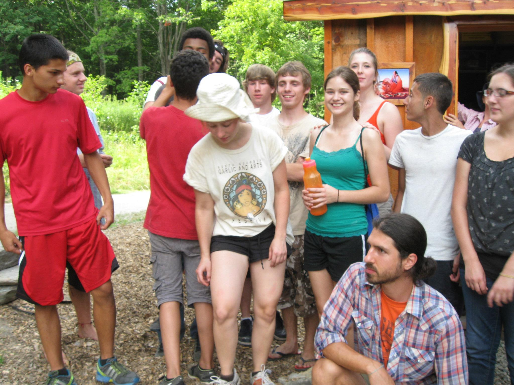
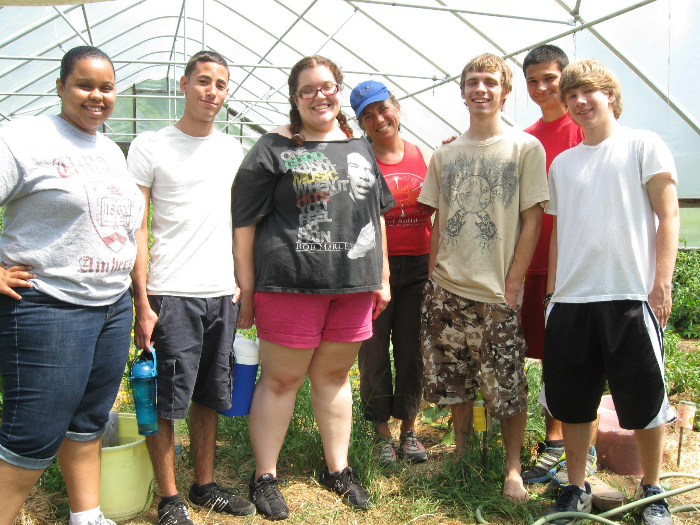
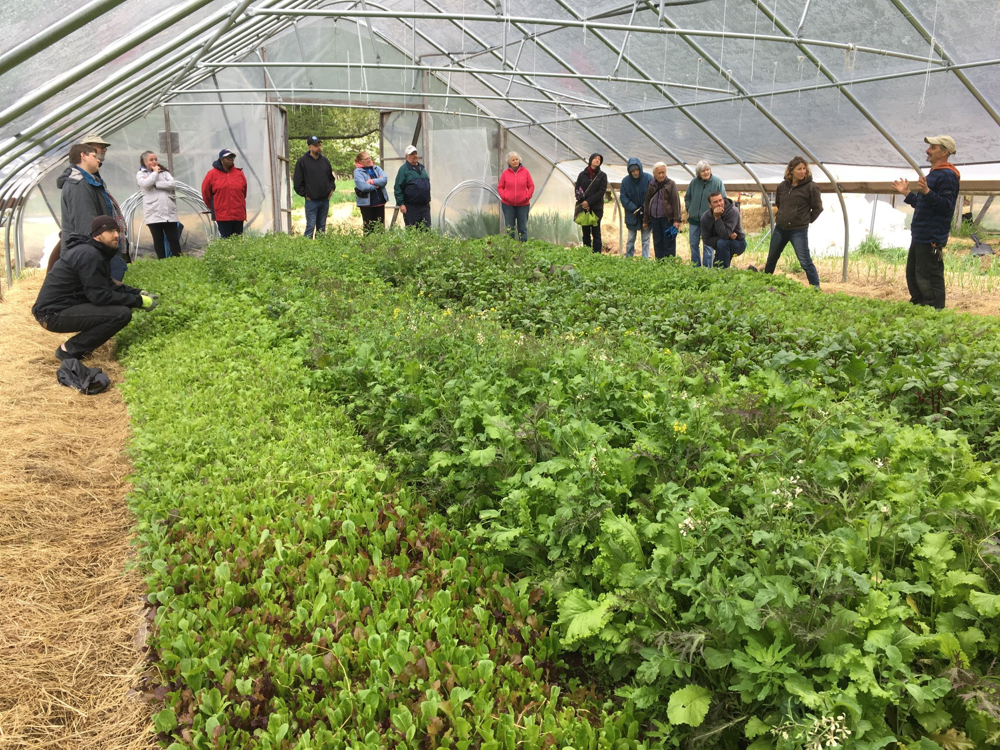

SOL Gardens
We have transitioned SOL (Seeds of Leadership) Garden to our Craft Your Own Life Program.This year we offered two sessions, one for ages 20-24 from June 10-13, another for ages 15-19 August 5-8. We are grateful to Common Good Greenfield, Greenfield Cooperative Farmers Exchange, and generous individuals for their support of this program.
Special thanks
SOL Garden is free to local youth, and made possible through grants from the MA Cultural Council Youth Reach Program, The AT and T Aspire Program, The Green Leaf Foundation, and individual contributions. Enjoy a new youth made video that shows a day in the life of our SOL Garden program!
Program Impact
Since the programs inception in 1998, 400 SOL Garden participants, most low-income and underemployed, have gained valuable life, college and career skills. They have cultivated a quarter acre garden and donated thousands of pounds of vegetables to families and senior citizens in our community; constructed their own 40′ solar greenhouse and designed and built the “SOL Shack” meeting space.
They have helped planted and tend gardens throughout the community; created and sold hundreds of ceramic SOL Bowls ; given over 30 presentations at conferences and events; participated in Earth and Spirit youth retreats and outdoor adventure, workshops in nutrition, cooking, and healing and celebration arts; helped thousands learn, celebrate, and play at the North Quabbin Garlic and Arts Festival.
Seeds of Solidarity


165 Chestnut Hill Rd
Orange, Massachusetts
01364-1078
Phone: (978) 544-9023